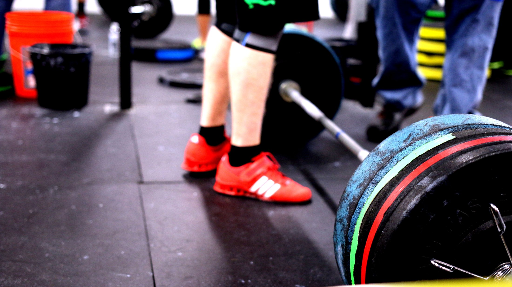
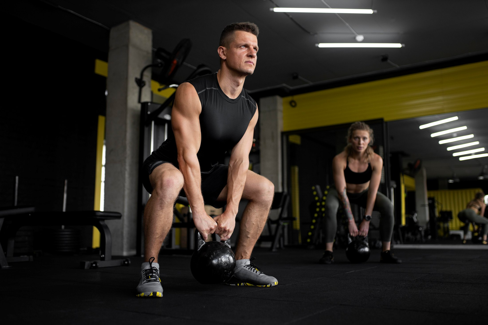
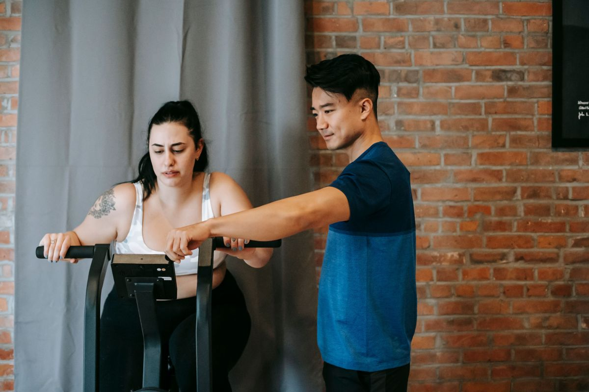
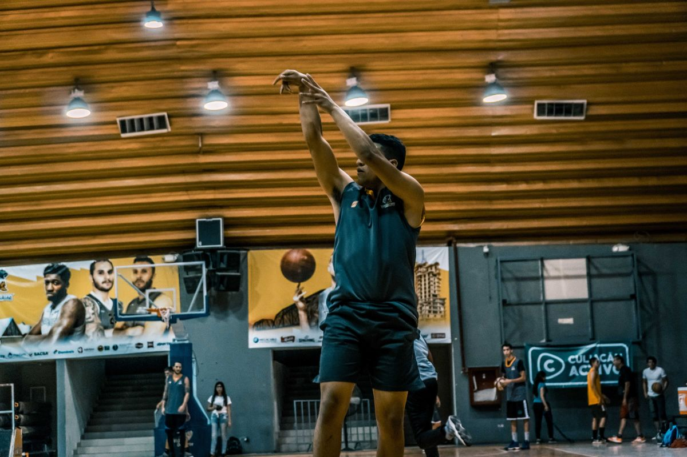
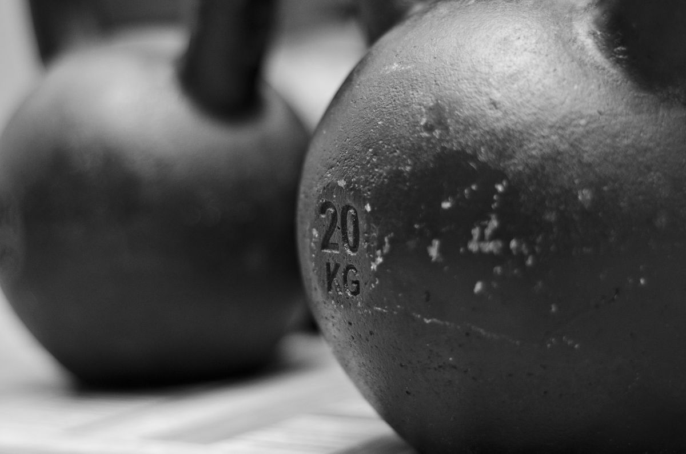
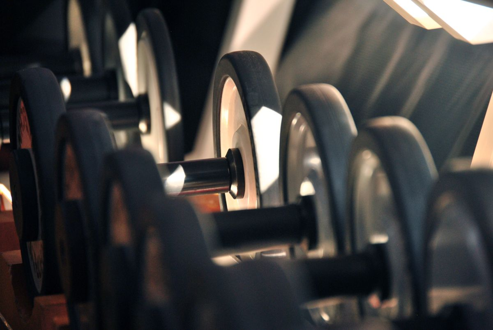

Modalidad
Sala con supervisión
- Rutina armada y actualizada cada mes
- Un entrenador en sala para corregir
- Usted maneja sus horarios
desde $28.000 al mes
Propuesta de sitio web — preparada para Family Fitness por CristalWeb
En Puerto Varas el que busca gimnasio encuentra primero a la cadena, porque la cadena tiene página. El centro que entrena con nombre y apellido no aparece — y justo eso, el seguimiento de verdad, es lo que la cadena no puede prometer.
Centro de entrenamiento personalizado · Puerto Varas
Es la pregunta que todos hacen y que ningún gimnasio contesta por escrito. Acá están las primeras doce semanas de alguien que parte de cero, semana por semana.
La pieza que ningún gimnasio escribe
Lo que se ve y lo que se siente no llegan juntos: lo segundo aparece mucho antes, y saberlo es la diferencia entre seguir y dejarlo en la tercera semana. Los hitos van como ejemplo hasta que el centro los confirme; el orden es de oficio.
Semana 1
Se mide de dónde parte: movilidad, fuerza en los patrones básicos, cómo duerme y qué come. Nada de esto es para juzgar — es la línea de partida contra la que se compara todo lo demás.
8%
Semanas 2–3
Poco peso y mucha técnica. Es la etapa que más gente abandona porque «no está pasando nada» — y es justo la que decide si a la semana ocho se puede cargar en serio.
25%
Semana 4
Duerme mejor, sube la escalera sin ahogarse y deja de tener agujetas cada vez. Nada de esto se ve en el espejo todavía, y es la señal más importante de todo el proceso.
33%
Semanas 5–7
Con la técnica lista, el peso empieza a subir de verdad. Acá se ajusta el plan por primera vez según lo que registró el entrenador, no según el calendario.
58%
Semana 8
Cambia cómo cae la ropa antes de que cambie la balanza. La balanza es el peor indicador de los primeros dos meses y por eso acá se mide con cinta y con cargas, no sólo con el peso.
66%
Semanas 9–12
A esta altura entrenar dejó de ser una decisión diaria. Se vuelve a evaluar todo lo de la semana 1 y se compara: ese cuadro lado a lado es el resultado real.
100%
Esto describe un proceso de entrenamiento, no un resultado garantizado: cada persona parte de un lugar distinto. Nada de lo de acá es una indicación médica ni nutricional.

El peso llega solo cuando el movimiento está bien. Al revés, no llega nunca — llega la lesión.
Cómo se entrena acá
Es la palabra más usada del rubro y la menos explicada. Esto es lo que significa acá, punto por punto. Los planes y los valores van como ejemplo.
Modalidad
desde $28.000 al mes
Modalidad
desde $55.000 al mes
Modalidad
desde $38.000 por persona
Horarios
Lunes a sábado, 07:00 a 22:00. Ese dato es suyo y es de los pocos que hoy están publicados — pero está en una biografía de Instagram, donde nadie lo busca a las once de la noche.
Con hora fija, además, el horario deja de ser una lista: es su bloque. La diferencia entre «abren hasta las diez» y «usted entrena los martes a las 19:00» es la que hace que alguien no falte.
Más vacío 07:00–10:00 · 14:00–17:00 · Más lleno 18:30–21:00

«La semana cuatro no se ve en el espejo. Se siente al subir la escalera.»
El espacio




Empezar
No hay que llegar «en forma» para empezar: la evaluación existe justamente para saber desde dónde se parte. Con estos datos, el centro agenda esa primera hora.
Sin JavaScript el enlace al Instagram sigue funcionando. Lo único que se pierde es que el texto se arme solo.
Para el dueño
Una propuesta de sitio web hecha por nuestra cuenta. Family Fitness no la encargó ni la ha revisado. Dimos por cierto sólo lo que ustedes publican: el horario de 07:00 a 22:00 de lunes a sábado, los 5.052 seguidores y que trabajan entrenamiento personalizado.
Los hitos de las doce semanas, las tres modalidades con sus valores, las franjas de horario y la dirección. El proceso está descrito como entrenamiento, sin prometer resultados y sin indicaciones médicas ni de alimentación.
Los valores reales, la dirección y una foto del espacio con gente entrenando. Y sobre todo: los hitos corregidos por ustedes. Esa tabla es el argumento que la cadena no puede copiar, porque requiere seguimiento uno a uno.